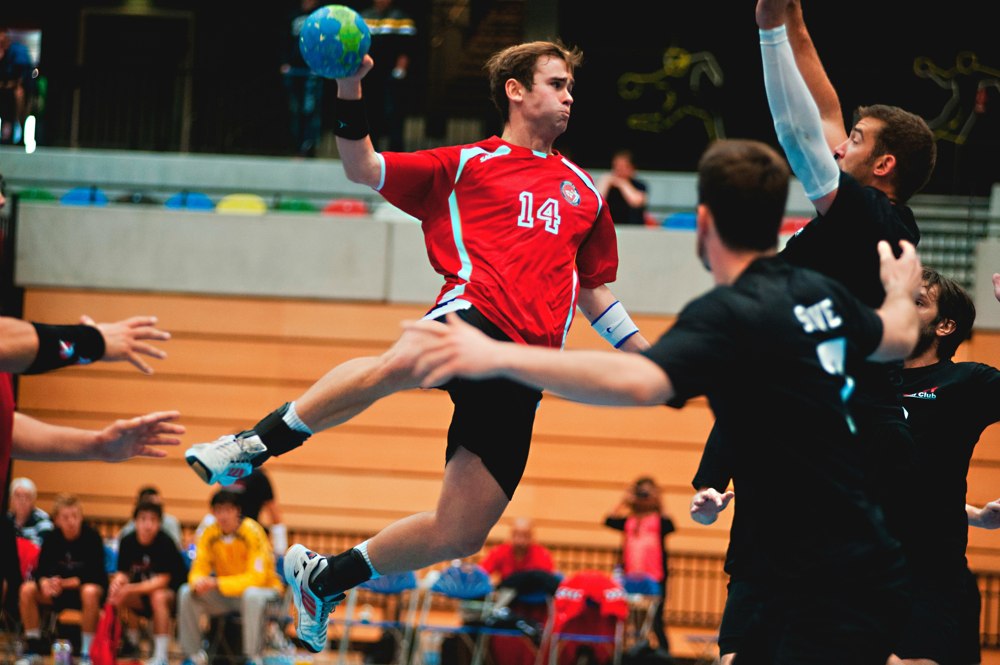

2024 Paris Olimpiyatları, hentbol finalinde nefes kesen bir mücadeleye sahne oldu. Avrupa hentbolunun iki devi, Danimarka ve İsveç, altın madalya için karşı karşıya geldi. Maç öncesi beklentiler oldukça yüksekti, zira Danimarka üst üste üçüncü Olimpiyat altın madalyasını kazanmak için sahaya çıkarken, İsveç ise yıllardır özlemini çektiği Olimpiyat şampiyonluğunu elde etmeyi hedefliyordu.
Paris'in muhteşem atmosferinde oynanan bu final, seyircilerin yoğun ilgisiyle karşılaştı. Biletler günler öncesinden tükenmiş, stadyum tamamen dolmuştu. Danimarkalı ve İsveçli taraftarlar, takımlarını coşkuyla desteklerken, maçın başlangıcında tribünlerde büyük bir heyecan hâkimdi.
Danimarka, turnuva boyunca gösterdiği üstün performansla finale gelmişti ve özellikle yarı finalde Almanya’ya karşı aldıkları galibiyetle büyük bir moral kazanmışlardı. İsveç ise Fransa’yı mağlup ederek finale yükselmiş ve dikkatleri üzerine çekmişti.
Maçın ilk yarısı, iki takımın da kontrollü başladığı bir mücadeleye sahne oldu. Danimarka, deneyimli oyuncuları Mikkel Hansen ve Mathias Gidsel ile hücumda etkili olurken, kaleci Niklas Landin'in muhteşem kurtarışlarıyla savunmada güven verdi. İlk dakikalarda iki takım da dengeli bir oyun sergiledi ve skor 5-5’e kadar eşit şekilde ilerledi.
Ancak, ilk yarının ortalarına doğru Danimarka tempoyu arttırdı. Hansen’in arka arkaya bulduğu gollerle Danimarka, 10-7 öne geçmeyi başardı. İsveç, bu dönemde Magnus Landin’in etkili oyunuyla karşılık vermeye çalışsa da Danimarka’nın sert savunması karşısında zorlandı. İlk yarı, Danimarka’nın 13-10’luk üstünlüğü ile sona erdi.
İkinci yarıya İsveç daha agresif başladı. Özellikle sağ kanattan Jim Gottfridsson ve Andreas Palicka’nın etkili oyunlarıyla skor bulmaya çalıştılar. İsveç, 40. dakikada skoru 15-14’e getirerek farkı bir sayıya indirdi ve oyuna yeniden tutundu. Bu dönemde İsveç’in savunması da Danimarka’ya zor anlar yaşattı, ancak kaleci Niklas Landin kritik anlarda yaptığı kurtarışlarla takımını ayakta tuttu.
Danimarka, İsveç’in bu baskısına rağmen soğukkanlılığını korudu. Özellikle Mikkel Hansen, maçın son bölümlerinde bir kez daha sahneye çıkarak Danimarka’nın skor üretmesini sağladı. Hansen’in 50. dakikada attığı golle fark yeniden 3 sayıya çıktı ve skor 18-15 oldu.
Maçın son 10 dakikasına girildiğinde, İsveç tüm gücüyle saldırsa da Danimarka savunması duvar örercesine sağlam durdu. İsveçli oyuncular, birkaç fırsatı değerlendiremeyince Danimarka kontrollü bir şekilde oyunu sürdürdü. Son dakikada Hansen’in serbest atıştan bulduğu golle skor 20-17’ye geldi ve İsveç’in umutları tamamen tükendi.
Danimarka, son anlarda topu kontrollü bir şekilde oynayarak zamanı eritti ve maçı 20-17 kazanarak üst üste üçüncü kez Olimpiyat altın madalyasını kazandı. Bu zafer, Danimarka hentbol tarihinin en büyük başarılarından biri olarak kayıtlara geçti.
Maçın bitiş düdüğüyle birlikte Danimarkalı oyuncular büyük bir sevinç yaşadı. Mikkel Hansen, hem takımını galibiyete taşıyan performansıyla hem de finalin en değerli oyuncusu (MVP) seçilerek geceye damga vurdu. Hansen, maç sonrası yaptığı açıklamada, "Bu takımın bir parçası olduğum için gurur duyuyorum. Üç Olimpiyat altını kazanmak bir rüya gibiydi, ama bunu başardık" dedi.
İsveç ise gümüş madalyayla yetinmek zorunda kaldı. İsveçli oyuncular maç sonrası hayal kırıklığını gizleyemezken, koçları Magnus Andersson, "Takımımızı mücadelelerinden dolayı kutluyorum. Danimarka bugün çok güçlüydü, ama buraya kadar gelmek de büyük bir başarıdır" dedi.